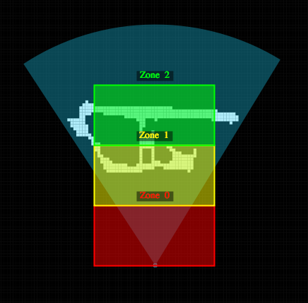
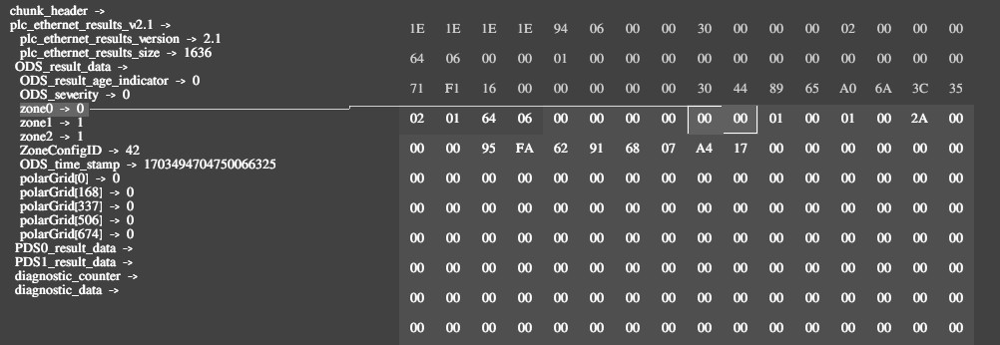

Setup Guide
Compatibility
O3R Hardware requirements
Article |
Description |
|---|---|
OVP813 |
VPU with pre-installed ODS and PDS licenses |
OVP812 |
VPU with pre-installed PDS license |
OVP811 |
VPU with pre-installed ODS license |
O3R222 |
|
O3R225 |
Use 1 Gigabit/s rated hardware for all cables and Ethernet switches.
O3R Software requirements
Software |
Version |
|---|---|
Firmware |
>=1.20.29 |
ifmVisionAssistant |
>=2.10.9 |
PLC hardware and software requirements
A PLC with TCP/IP client capabilities is required to use the TCP/IP PLC interface.
Setup procedure
Network topology
To estabilish a successful communication between PLC and VPU, both devices must be in same subnet range. Please refer to the Ethernet interfaces documentation for setting up the static IP address on VPU.
Note
Please use only
eth0as a main communication interface between VPU and PLC.eth1can be used for the debugging purposes using the Vision Assistant or the ifm3d API.Ethernet ring topologies are not supported:
eth0andeth1must not be in same subnet range.
Workflow
The expected workflow is represented in the state machine below:

Note
If there are any diagnostics raised during the configuration or operation, please review the diagnostic documentation to resolve the issues.
ODS application setup
To create and configure the ODS application instance please refer to the ODS section.
Then, configure presets, following the presets documentation. The PLC application is only able to switch between already existing presets of the ODS application. If the requested preset index does not existing, then the system will raise a diagnostic event indicating an invalid configuration. Therefore, the presets of the ODS application have to be configured prior to creating the PLC application.
Example preset configurations for different driving scenarios can be found in the driving scenarios document
PLC application setup
In the ifmVisionAssistant, create the PLC application in the Application tab by clicking on the + icon.
Configuration parameters
Parameter |
Description |
|---|---|
|
Custom name for the application. |
|
The current application state. Per default, the state is set to |
|
Identifier of the ODS app instance, for example |
|
Identifier of the PDS app instance, for example |
|
Enables or disables Ethernet/IP input and output. Set to |
The PLC application is per default in RUN state. Therefore the ODS application shall be saved to be in RUN state at every bootup session.
Note
The PLC embedded application sends data over TCP/IP without waiting for acknowledgement. When additional network load is introduced by the user, it may result in network saturations leading to communication delays.
Exploring the data
The ifmVisionAssistant supports live interactive data exploration for debugging purposes. See the data corresponding to zone occupancy in this example:
 
Saving applications
Configurations can be persisted between reboots of the VPU using the save-init function. In the ifmVisionAssistant, this can be accomplished by pressing the save button under the applications tab. To remove this, factory reset the VPU.
Function blocks
Available function blocks are documented in the function blocks documentation.